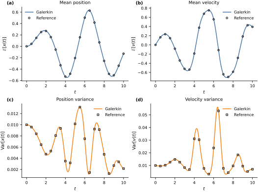
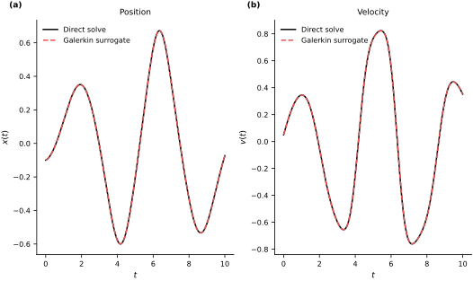

Polynomial Chaos for Vector Dynamical Systems#
The preceding notebooks developed stochastic Galerkin propagation for a scalar state and tensor-product polynomial bases for several independent inputs. We now combine these constructions for a vector-valued dynamical system.
Let \(\boldsymbol{\Xi}\in\mathbb{R}^d\) have probability law \(\mu\). For each input value \(\boldsymbol{\xi}\in\mathbb{R}^d\), consider
where \(\mathbf{x}(t;\boldsymbol{\xi})\in\mathbb{R}^n\) and \(\mathbf{f}:[0,T]\times\mathbb{R}^n\times\mathbb{R}^d\to\mathbb{R}^n\). Assume that the initial-value problem has a unique solution and that \(\mathbf{x}(t;\cdot)\) and its time derivative belong to \(L^2(\mu;\mathbb{R}^n)\) on the time interval of interest.
Vector-valued stochastic Galerkin projection#
For a nonnegative degree \(p\), define the total-degree index set
Let \(\{\phi_{\boldsymbol{\alpha}}\}_{\boldsymbol{\alpha}\in\mathcal{A}_p}\) be orthonormal with respect to \(\mu\), with \(\phi_{\mathbf{0}}=1\). We approximate the state by
where every coefficient \(\mathbf{c}_{\boldsymbol{\alpha}}(t)\) is a vector in \(\mathbb{R}^n\). Define the vector residual
Requiring \(\mathbb{E}[\mathbf{R}_p(t;\boldsymbol{\Xi}) \phi_{\boldsymbol{\beta}}(\boldsymbol{\Xi})]=\mathbf{0}\) for every \(\boldsymbol{\beta}\in\mathcal{A}_p\) gives
with
This is the vector-valued extension of the stochastic Galerkin construction (Xiu and Karniadakis, 2002).
Mean and covariance#
Let \(\mathbf{X}_t^{(p)}=\mathbf{x}_p(t;\boldsymbol{\Xi})\). Orthonormality gives
and
The diagonal entries are the componentwise variances, while the off-diagonal entries describe dependence between state components. Numerical quadrature approximates the expectations in the coefficient equations. Degree, quadrature, and time-integration convergence must therefore be checked separately.
Example: Duffing oscillator with an uncertain initial state#
Let \(x(t)\) denote displacement and \(v(t)\) velocity. The forced Duffing oscillator satisfies
We use
The uncertain initial state is
where \(\Xi_1\) and \(\Xi_2\) are independent standard normal random variables, \(\mu_x=\mu_v=0\), and \(\sigma_x=\sigma_v=0.1\). A tensor product of normalized probabilists’ Hermite polynomials therefore matches the input law directly.
We use a total-degree-\(7\) basis, which contains \(36\) terms, and a \(16\times16\) tensor Gauss–Hermite rule. Each one-dimensional rule integrates polynomials through degree \(31\) exactly, which is sufficient for the degree-\(28\) integrands produced by the cubic vector field and the retained basis. Orthojax constructs the basis (Bilionis, 2024).
parameters = jnp.array([1.0, 5.0, 0.37, 0.1, 1.0])
initial_mean = jnp.array([0.0, 0.0])
initial_scale = jnp.array([0.1, 0.1])
def duffing_vector_field(t, state, parameters):
alpha, beta, gamma, delta, omega = parameters
position = state[..., 0]
velocity = state[..., 1]
acceleration = (
gamma * jnp.cos(omega * t)
- delta * velocity
- alpha * position
- beta * position**3
)
return jnp.stack((velocity, acceleration), axis=-1)
def standard_normal_tensor_rule(order):
nodes_1d, weights_1d = np.polynomial.hermite_e.hermegauss(order)
weights_1d = weights_1d / math.sqrt(2.0 * math.pi)
xi_1, xi_2 = np.meshgrid(nodes_1d, nodes_1d, indexing="ij")
nodes = np.column_stack((xi_1.ravel(), xi_2.ravel()))
weights = np.outer(weights_1d, weights_1d).ravel()
return jnp.asarray(nodes), jnp.asarray(weights)
degree = 7
one_dimensional_basis = ojax.make_hermite_polynomial(degree, ncap=512)
polynomial_basis = ojax.TensorProduct(
degree,
[one_dimensional_basis, one_dimensional_basis],
)
quadrature_nodes, quadrature_weights = standard_normal_tensor_rule(order=16)
basis_at_nodes = polynomial_basis(quadrature_nodes)
multi_indices = np.asarray(polynomial_basis.terms)
num_basis = basis_at_nodes.shape[1]
gram_matrix = jnp.einsum(
"q,qi,qj->ij",
quadrature_weights,
basis_at_nodes,
basis_at_nodes,
)
initial_states_at_nodes = initial_mean + initial_scale * quadrature_nodes
projected_initial = jnp.einsum(
"q,qn,qi->ni",
quadrature_weights,
initial_states_at_nodes,
basis_at_nodes,
)
constant_index = int(np.flatnonzero(np.all(multi_indices == 0, axis=1))[0])
position_index = int(
np.flatnonzero(np.all(multi_indices == np.array([1, 0]), axis=1))[0]
)
velocity_index = int(
np.flatnonzero(np.all(multi_indices == np.array([0, 1]), axis=1))[0]
)
exact_initial = jnp.zeros((2, num_basis))
exact_initial = exact_initial.at[0, position_index].set(0.1)
exact_initial = exact_initial.at[1, velocity_index].set(0.1)
gram_error = float(jnp.max(jnp.abs(gram_matrix - jnp.eye(num_basis))))
initial_projection_error = float(
jnp.max(jnp.abs(projected_initial - exact_initial))
)
print(f"Number of basis terms: {num_basis}")
print(f"Maximum Gram-matrix error: {gram_error:.3e}")
print(f"Maximum initial-projection error: {initial_projection_error:.3e}")
assert num_basis == 36
assert gram_error < 2e-7
assert initial_projection_error < 1e-8
Number of basis terms: 36
Maximum Gram-matrix error: 1.383e-07
Maximum initial-projection error: 7.730e-09
The initial state is a degree-one function of \(\boldsymbol{\Xi}\), so its exact coefficient array has only two nonzero entries. We use those coefficients exactly after checking their quadrature projection.
At every evaluation of the Galerkin right-hand side, the code reconstructs the state at all quadrature nodes, evaluates the Duffing vector field there, and projects each state component back onto the same scalar polynomial basis. Diffrax integrates the resulting array of vector coefficients (Kidger, 2021).
def galerkin_rhs(t, coefficients, parameters):
states_at_nodes = basis_at_nodes @ coefficients.T
fields_at_nodes = duffing_vector_field(t, states_at_nodes, parameters)
return jnp.einsum(
"q,qn,qi->ni",
quadrature_weights,
fields_at_nodes,
basis_at_nodes,
)
times = jnp.linspace(0.0, 10.0, 401)
galerkin_solution = diffeqsolve(
ODETerm(galerkin_rhs),
Tsit5(),
t0=times[0],
t1=times[-1],
dt0=0.02,
y0=exact_initial,
args=parameters,
saveat=SaveAt(ts=times),
stepsize_controller=PIDController(rtol=1e-8, atol=1e-10),
max_steps=100_000,
)
Nonintrusive reference calculation#
A higher-order tensor Gauss–Hermite rule provides a deterministic reference. At each reference node, we solve the original two-state Duffing system without a polynomial approximation. Comparing orders \(20\) and \(24\) checks the reference quadrature before it is used to assess the Galerkin moments.
def solve_from_initial_state(initial_state):
return diffeqsolve(
ODETerm(duffing_vector_field),
Tsit5(),
t0=times[0],
t1=times[-1],
dt0=0.02,
y0=initial_state,
args=parameters,
saveat=SaveAt(ts=times),
stepsize_controller=PIDController(rtol=1e-9, atol=1e-11),
max_steps=100_000,
).ys
solve_many = jax.jit(jax.vmap(solve_from_initial_state))
def reference_moments(order):
nodes, weights = standard_normal_tensor_rule(order)
initial_states = initial_mean + initial_scale * nodes
trajectories = np.asarray(solve_many(initial_states))
weights = np.asarray(weights)
mean = np.einsum("q,qtn->tn", weights, trajectories)
centered = trajectories - mean[None, :, :]
covariance = np.einsum(
"q,qti,qtj->tij",
weights,
centered,
centered,
)
return mean, covariance
reference_mean_20, reference_covariance_20 = reference_moments(order=20)
reference_mean, reference_covariance = reference_moments(order=24)
coefficient_array = np.asarray(galerkin_solution.ys)
pc_mean = coefficient_array[:, :, constant_index]
nonconstant = np.any(multi_indices != 0, axis=1)
pc_covariance = np.einsum(
"tna,tma->tnm",
coefficient_array[:, :, nonconstant],
coefficient_array[:, :, nonconstant],
)
reference_mean_refinement = np.max(
np.abs(reference_mean_20 - reference_mean)
)
reference_covariance_refinement = np.max(
np.abs(reference_covariance_20 - reference_covariance)
)
mean_error = np.max(np.abs(pc_mean - reference_mean))
covariance_error = np.max(np.abs(pc_covariance - reference_covariance))
test_inputs = jnp.array([[-1.0, 0.5], [0.75, -1.25]])
test_basis = np.asarray(polynomial_basis(test_inputs))
surrogate_paths = np.einsum("tnk,qk->qtn", coefficient_array, test_basis)
direct_paths = np.asarray(
solve_many(initial_mean + initial_scale * test_inputs)
)
surrogate_error = np.max(np.abs(surrogate_paths - direct_paths))
print(f"Reference mean refinement error: {reference_mean_refinement:.3e}")
print(f"Reference covariance refinement error: {reference_covariance_refinement:.3e}")
print(f"Maximum Galerkin mean error: {mean_error:.3e}")
print(f"Maximum Galerkin covariance error: {covariance_error:.3e}")
print(f"Maximum surrogate response error: {surrogate_error:.3e}")
assert reference_mean_refinement < 3e-10
assert reference_covariance_refinement < 3e-10
assert mean_error < 3e-6
assert covariance_error < 6e-6
assert surrogate_error < 1e-3
Reference mean refinement error: 1.297e-10
Reference covariance refinement error: 1.150e-10
Maximum Galerkin mean error: 1.647e-06
Maximum Galerkin covariance error: 4.118e-06
Maximum surrogate response error: 6.808e-04
The four panels compare the Galerkin mean and componentwise variances with the higher-order nonintrusive reference. Open markers show the reference values at every twentieth stored time.
fig, axes = plt.subplots(
2,
2,
figsize=FIGURE_SIZES["full_tall"],
constrained_layout=True,
)
moment_data = [
(pc_mean[:, 0], reference_mean[:, 0], r"$\mathbb{E}[x(t)]$", "Mean position"),
(pc_mean[:, 1], reference_mean[:, 1], r"$\mathbb{E}[v(t)]$", "Mean velocity"),
(
pc_covariance[:, 0, 0],
reference_covariance[:, 0, 0],
r"$\operatorname{Var}[x(t)]$",
"Position variance",
),
(
pc_covariance[:, 1, 1],
reference_covariance[:, 1, 1],
r"$\operatorname{Var}[v(t)]$",
"Velocity variance",
),
]
for index, (ax, data) in enumerate(zip(axes.ravel(), moment_data)):
pc_values, reference_values, ylabel, title = data
color = BOOK_COLORS["blue"] if index < 2 else BOOK_COLORS["orange"]
marker = "o" if index < 2 else "s"
ax.plot(np.asarray(times), pc_values, color=color, label="Galerkin")
ax.plot(
np.asarray(times)[::20],
reference_values[::20],
marker,
color="black",
markerfacecolor="none",
linestyle="none",
label="Reference",
)
ax.set(xlabel="$t$", ylabel=ylabel, title=title)
ax.legend()
finalize_axes(axes)
label_panels(axes)
plt.show()

The coefficient solution also defines a surrogate \(\boldsymbol{\xi}\mapsto\mathbf{x}_p(t;\boldsymbol{\xi})\). The next figure compares the surrogate with a direct Duffing solve at \(\boldsymbol{\xi}=(-1,0.5)^{\mathsf T}\), a point that was not used as a quadrature node.
fig, axes = plt.subplots(
1,
2,
figsize=FIGURE_SIZES["full_landscape"],
constrained_layout=True,
)
component_data = [
(0, r"$x(t)$", "Position"),
(1, r"$v(t)$", "Velocity"),
]
for ax, (component, ylabel, title) in zip(axes, component_data):
ax.plot(
np.asarray(times),
direct_paths[0, :, component],
color="black",
label="Direct solve",
)
ax.plot(
np.asarray(times),
surrogate_paths[0, :, component],
color=BOOK_COLORS["red"],
linestyle="--",
label="Galerkin surrogate",
)
ax.set(xlabel="$t$", ylabel=ylabel, title=title)
ax.legend()
finalize_axes(axes)
label_panels(axes)
plt.show()

The degree-seven approximation reproduces the reference mean and covariance throughout the interval and provides an accurate time-dependent surrogate. The printed errors quantify the remaining polynomial-truncation, basis-construction, quadrature, and time-integration effects.
Exercise#
Repeat the calculation with total degrees \(p=3\), \(5\), and \(7\). For each degree, increase the Gauss–Hermite order until the Gram matrix and reported moments are stable. Then increase the initial standard deviations from \(0.1\) to \(0.25\) and determine how the degree required for the same accuracy changes.
Scaling and accuracy#
Tensor-product bases and vector coefficients extend the scalar Galerkin construction to multivariable dynamical systems. Their cost grows with the number of inputs and the polynomial degree, while their accuracy depends on smooth parameter-to-solution maps. The next section examines these limitations and the regimes in which other uncertainty-propagation methods are preferable.